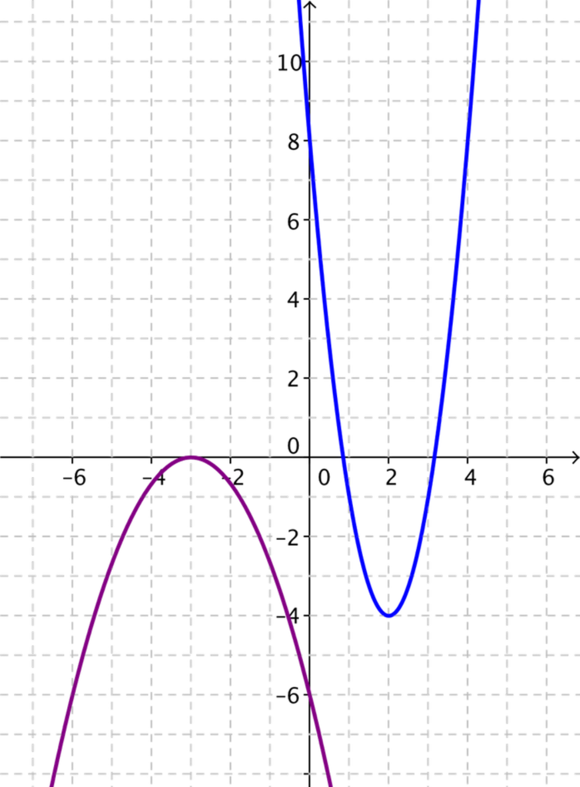
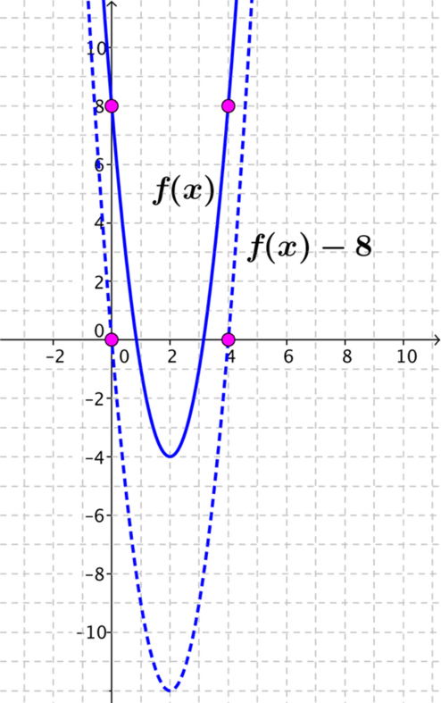

In how many ways can you choose to show this equation?
Which format did you initially choose and why?
Given that the diagram shows a parabola, I know that I am looking for a quadratic equation.
There are three forms in which I could choose to write a quadratic equation:
y=ax2+bx+c(1)
y=a(x−d)(x−e)(2)
y=a(x−f)2+g(3)
In order to write the equation in form (1) I need to know three pieces of information (because there are three unknowns). Any three different coordinate points on the parabola would work as this would enable me to write three equations in a,b,c which I could then solve simultaneously.
To write the equation directly in form (2) (fully factorised form) I also need to know three pieces of information. This time however I specifically need to know the location of the x-intercepts (assuming that there are any), which will give me the values of d and e. Given another point on the parabola I can then identify the value of a.
Form (3) (completed square form) will require a different three pieces of information. The location of the minimum or maximum point (the vertex) of the parabola, (f,g), plus one additional point on the parabola to identify the value of a.
I can now consider the specific case of the red parabola presented above. Attempting to identify the equation of this parabola in each of the three forms described will allow me to compare efficiency.
If I want to find the equation in the form y=ax2+bx+c, then I will need to make use of three pairs of coordinates on the parabola. If I substitute each pair in turn into the general form of the equation then I will be able to solve these simultaneously to find the values of a,b and c.
Let’s say I substitute each of (0,−3), (1,−4) and (3,0) into the equation so that I get the three equations:
−3=c(4)
−4=a+b+c(5)
0=9a+3b+c(6)
Substituting equation the value of c from (4) into (5) and (6) I get
Substituting this back into any one of the equations I find that b=−2.
So the equation of the parabola is
y=x2−2x−3.
It’s worth noting that this is a fairly laborious process! Perhaps a different approach will be more efficient.
Instead, I could have tried to find the equation in factorised form, y=a(x−d)(x−e), where d and e are the x-intercepts of the parabola.
I can read these from the graph as x=−1 and x=3 and so I can write down the equation of the parabola
y=a(x+1)(x−3).
Using a third point on the curve, say (0,−3), I can now find that a=1 and hence the equation of the parabola is
y=(x+1)(x−3).
I could expand this equation to check that it agrees with my previous answer:
y=x2+x−3x−3,
which simplifies to
y=x2−2x−3
as expected.
Finally, I could have tried to find the equation in completed square form, y=a(x−f)2+g.
From the graph I can see that the minium point as has coordinates (1,−4) so the completed square form of the equation will be
y=a(x−1)2−4.
Using an additional point on the parabola, say (0,−3) again, I find that a=1 and so the equation of the parabola is
y=(x−1)2−4.
Once again, I could expand this to check that it agrees with the equations found above via other methods:
y=x2−2x+1−4
which simplifies to
y=x2−2x−3
as expected.
For this particular parabola form (2), factorised form, is probably the most efficient form to aim for. The x-intercepts are clear from the graph and there are several other integer coordinates visible that can be used to identify the scaling factor, a.
What is the same and what is different about your approach to finding the equation of the two parabolas below, compared to the example above?

First I will consider the blue parabola.
As before I can take three pairs of coordinates located on the parabola and substitute them into the general equation of the form y=ax2+bx+c, solving simultaneously to find a,b and c.
Let’s say I choose (0,8)(4,8), and (2,−4), giving me three equations:
8=c
8=16a+4b+c
−4=4a+2b+c.
Solving simultaneously I obtain the quadratic equation
y=3x2−12x+8.
I cannot accurately read the positions of the x-intercepts from the graph. This means that I cannot write this equation directly in factorised form.
Perhaps it is worth noting however, that whilst I cannot directly write the equation in factorised form, I can use an extension of this approach to identify the equation in form (1).
I know the location of the two points on the parabola on the line y=8. If I call the blue parabola y=f(x) and consider the translation y=f(x)−8 I can write down
f(x)−8=a(x−0)(x−4).
Rearranging and simplifying I find that
f(x)=ax(x−4)+8=ax2−4ax+8.
Using a third point on either y=f(x) or y=f(x)−8, I can establish that a=3 and hence that the equation of the blue parabola is
y=3x2−12x+8.
(I could similarly have used the location of the two points on the line y=−1 to get the same result.)

Finding the equation in completed square form is fairly straight forward as I can read the coordinates of the minimum point from the graph as (2,−4).
I now know the equation is of the form
y=a(x−2)2−4.
Using an additional point on the parabola, say (0,8), I find that a=3 and so the equation is
y=3(x−2)2−4.
Expanding this equation to check that this agrees with previous result I get
y=3x2−12x+8
as expected.
For this parabola form (3), completed square form, is the more efficient form. The coordinates of the minimum point can be read directly from the graph and an integer y-intercept makes for a more straight-forward calculation to confirm the scaling factor, a. It is worth noting that the method of translating the parabola discussed in form (2) is also an efficient approach here.
Now I will consider the purple parabola.
Taking the first approach as before I select three coordinates: (0,−6), (−3,0) and (−6,−6) to substitute into the general form of the equation. This gives the three equations
−6=c
0=9a−3b+c
−6=36a−6b+c.
Solving simultaneously I find the equation of the parabola to be
y=−23x2−4x−6.
I can see from the graph that this parabola touches the x-axis at x=−3. This means that I can write the equation in the form
y=a(x+3)2.
Using the point (0,−6) I find that a=−23 and so the equation is
y=−23(x+3)2.
Expanding this equation to check that it agrees with my previous answer I have
y=−23x2−4x−6
as expected.
From the graph I know that the maximum point on the parabola is at (−3,0). This means that the equation is of the form
y=a(x+3)2.
I am now in exactly the same position as in form (2) so using the same method I know that a=−23 and the equation is
y=−23(x+3)2
as before.
For this parabola form (2) and form (3) are equivalent and more efficient that the approach used in form (1).
What properties do the three parabolas have in common?
The three parabolas have the following properties in common:
A vertical line of symmetry passing through the maximum or minimum point.
Real roots - two of the parabolas cross the x-axis in two places, one touches the x-axis.
A y-intercept that can be read from the diagram.
At least three points that pass through integer coordinates that can be read from the graph.
Is there an approach to finding the equation that works for all three of these parabolas, and indeed for any parabola you could be given?
Which approach to finding the equation was the most efficient? Is it the same approach for each example?
In general all of the approaches discussed here rely on the ability to read information directly from the graph.
It is possible to use three simultaneous equations to find the equation of each parabola in form (1). However, this is a laborious approach and consequently there are plenty of opportunities for “silly” arithmetical errors! This is certainly not the most efficient approach!
Form (2), factorised form, is a very efficient approach for the red and purple parabolas. Although it may seem that this approach cannot work for the blue parabola (and indeed any parabola which doesn’t cross the x-axis), it may be possible to consider a translation of the parabola and to obtain the equation from there, as demonstrated in the approach to form (2) (for the blue parabola). This is still more efficient than attempting the original approach for form (1).
Form (3), completed square form, is a very efficient approach for all three parabolas as the coordinates of the minimum or maximum point (the vertex) of each parabola can be read directly from the graph.